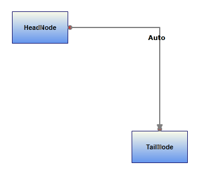
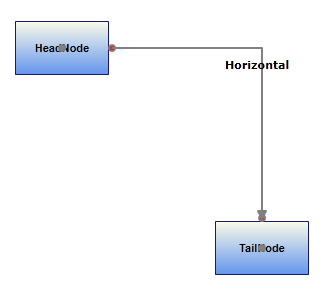
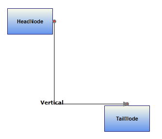

This feature enables you to orient the FirstSegment of the Orthogonal LineConnector as needed.
This feature provides the following options to orient the first segment:
· Auto – The first segment of orthogonal LineConnector will always be perpendicular to the sides of the HeadNode, to which it is connected.
· Horizontal – The FirstSegment of the Orthogonal LineConnector will always be connected horizontally to the HeadNode.
· Vertical - The FirstSegment of the Orthogonal LineConnector will always be connected vertically to the HeadNode.
Use Case Scenarios
By default line connector will be drawn based on the space between the nodes. If you want to customize the default patter, you can achieve this using this feature. This enables you to align the first segment of the connector and rest will be aligned based on this.
Tables for Properties, Methods, and Events
Properties
Table 38: PropertyTable
|
Property |
Description |
Type |
Data Type |
Reference links |
|
FirstSegmentOrientation |
Gets or sets a value to orient the FirstSegement.
Default Value is Auto. |
Dependency property |
SegmentOrientation.Auto SegmentOrientation.Horizontal SegmentOrientation.Vertical |
NA |
Orienting the First Segment
You can orient the FirstSegment of the Orthogonal LineConnector using the FirstSegmentOrientation property.
The following code illustrates how to set the FirstSegmentOrientation to Auto:
|
[C#] LineConnector line = new LineConnector(); line.FirstSegmentOrientation = SegmentOrientation.Auto; |
|
[VB] Dim line As New
LineConnector() |

Figure 81: FirstSegmentOrientation is Auto
The following code illustrates how to set the FirstSegmentOrientation to Horizontal:
|
[C#] LineConnector line = new LineConnector(); line.FirstSegmentOrientation = SegmentOrientation.Horizontal; |
|
[VB] Dim line As New
LineConnector() |

Figure 82: FirstSegmentOrientation is Horizontal
The following code illustrates how to set the FirstSegmentOrientation to Vertical
|
[C#] LineConnector line = new LineConnector(); line.FirstSegmentOrientation = SegmentOrientation.Vertical; |
|
[VB] Dim line As New
LineConnector() |

Figure 83: FirstSegmentOrientation is Vertical
 Note: This FirstSegmentOrientation property is
only works as expected when the LineConnector satisfies the following
things.
Note: This FirstSegmentOrientation property is
only works as expected when the LineConnector satisfies the following
things.
· LineConnector is connected between Nodes through ConnectionPort.
·
When there is only one intermediate Point in Orthogonal
LineConnector.